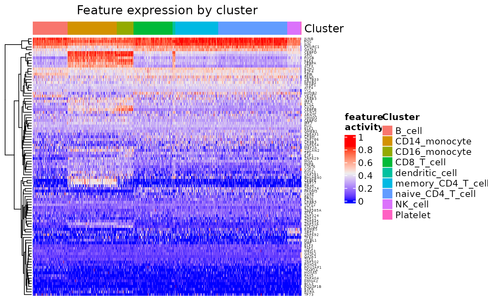
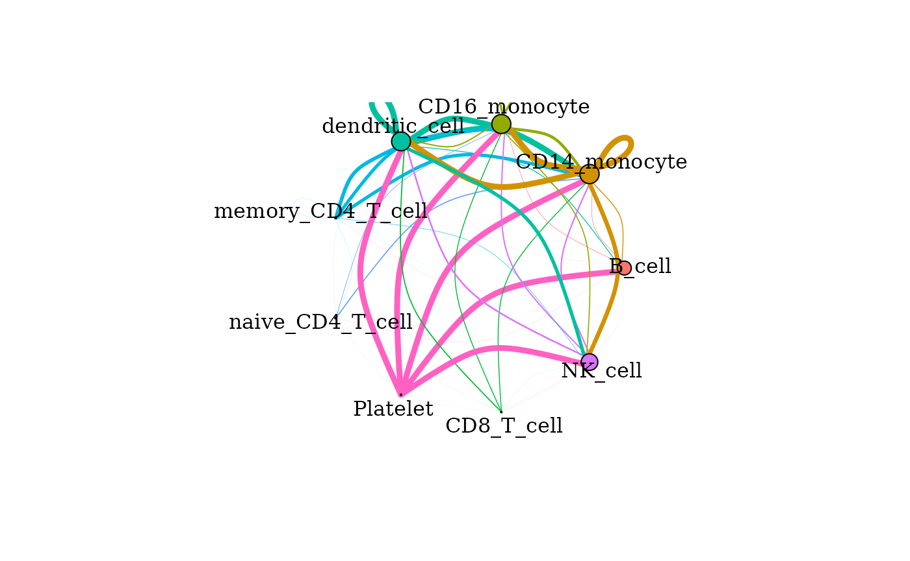
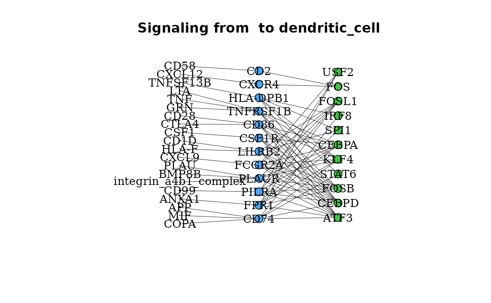
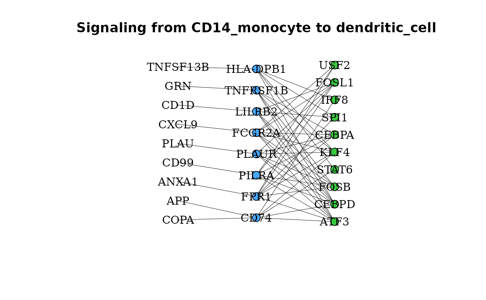
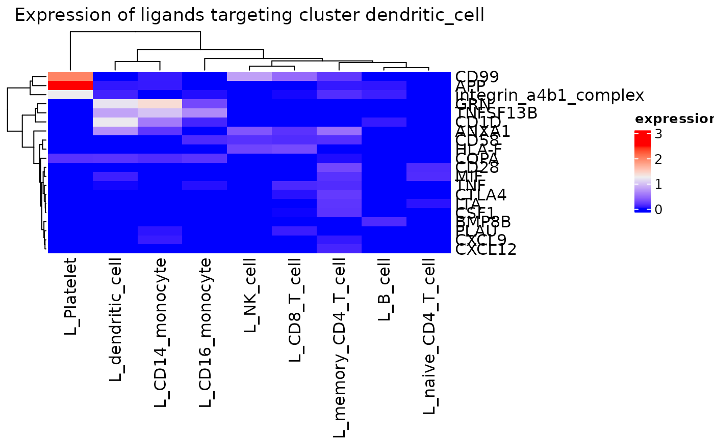
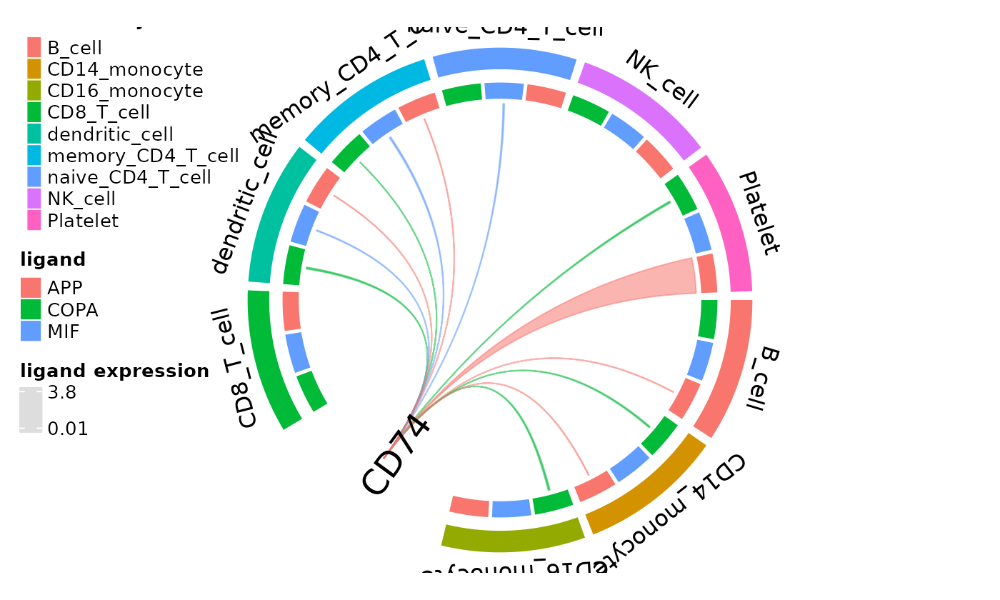

dominoSignal is a tool for analysis of intra- and intercellular
signaling in single cell RNA sequencing (scRNAseq) data based on
transcription factor (TF) activity. Here, we show a basic example
pipeline for generating communication networks as a
domino() object. This vignette will demonstrate how to use
dominoSignal on the 10X Genomics Peripheral Blood Mononuclear Cells
(PBMC) data set of 2,700 cells. The data can be downloaded from
10x genomics. This vignette uses a preprocessed version
from Zenodo.
Installation
Installation of dominoSignal from Bioconductor can be achieved using the BiocManager package.
if (!require("BiocManager", quietly = TRUE)){
install.packages("BiocManager")
}
BiocManager::install("dominoSignal")Options and Setup
Libraries and set up
Data used in our vignettes can be downloaded from Zenodo.
# BiocFileCache helps with managing files across sessions
bfc <- BiocFileCache::BiocFileCache(ask = FALSE)
data_url <- "https://zenodo.org/records/10951634/files"
# download the reduced pbmc files preprocessed PBMC 3K scRNAseq data set as a
# SingleCellExperiment object
pbmc_url <- paste0(data_url, "/pbmc3k_sce.rds")
pbmc <- BiocFileCache::bfcrpath(bfc, pbmc_url)
# download scenic results
scenic_auc_url <- paste0(data_url, "/auc_pbmc_3k.csv")
scenic_auc <- BiocFileCache::bfcrpath(bfc, scenic_auc_url)
scenic_regulon_url <- paste0(data_url, "/regulons_pbmc_3k.csv")
scenic_regulon <- BiocFileCache::bfcrpath(bfc, scenic_regulon_url)
# download CellPhoneDB files
cellphone_url <- "https://github.com/ventolab/cellphonedb-data/archive/refs/tags/v4.0.0.tar.gz"
cellphone_tar <- BiocFileCache::bfcrpath(bfc, cellphone_url)
cellphone_dir <- paste0(tempdir(), "/cellphone")
untar(tarfile = cellphone_tar, exdir = cellphone_dir)
cellphone_data <- paste0(cellphone_dir, "/cellphonedb-data-4.0.0/data")
# directory for created inputs to pySCENIC and dominoSignal
input_dir <- paste0(tempdir(), "/inputs")
if (!dir.exists(input_dir)) {
dir.create(input_dir)
}Data preparation
Analysis of cell-cell communication with dominoSignal often follows
initial processing and annotation of scRNAseq data. We used the OSCA
workflow to prepare the data set for analysis with dominoSignal. The
complete processing script is available in the data-raw
directory of the dominoSignal package. The processed data can be
downloaded from Zenodo.
pbmc <- readRDS(pbmc)Loading TF and receptor-ligand data
Loading SCENIC results
The TF activities are a required input for dominoSignal, and the regulons learned by SCENIC are an important but optional input needed to annotate TF-target interactions and to prune TF-receptor linkages where the receptor is a target of the TF, as correlation cannot distinguish between the receptor driving TF activity or TF activity inducing receptor expression.
regulons <- read.csv(scenic_regulon)
auc <- read.table(scenic_auc, header = TRUE, row.names = 1, stringsAsFactors = FALSE,
sep = ",")The initial regulons data frame read into R from the ctx function has
two rows of column names that need to be replaced with one row of names.
dominoSignal takes TF regulons as a named list of target-gene vectors,
so regulons from any TF activity method can be used. We provide a helper
function, create_regulon_list_scenic() to create this list
from the output of the pySCENIC
ctx function.
regulons <- regulons[-1:-2, ]
colnames(regulons) <- c("TF", "MotifID", "AUC", "NES", "MotifSimilarityQvalue", "OrthologousIdentity",
"Annotation", "Context", "TargetGenes", "RankAtMax")
regulon_list <- create_regulon_list_scenic(regulons = regulons)Users should be aware that the area under the recovery curve (AUC)
matrix from SCENIC is loaded
in a cell x TF orientation and should be transposed to TF x cell
orientation. pySCENIC also appends “(+)” to TF names that are converted
to “…” upon loading into R. These characters can be included without
affecting the results of dominoSignal analysis but can be confusing when
querying TF features in the data. We recommend comprehensive removal of
the “…” characters using the gsub() function.
auc_in <- as.data.frame(t(auc))
# Remove pattern '...' from the end of all rownames:
rownames(auc_in) <- gsub("\\.\\.\\.$", "", rownames(auc_in))Loading the CellPhoneDB database
dominoSignal reads receptor-ligand databases in a uniform data frame
format referred to as a receptor-ligand map (rl_map) so any
reference database can be used if formatted appropriately. Each row
corresponds to a receptor-ligand interaction. Genes participating in an
interaction are referred to as “partner A” and “partner B” without
requiring for fixed ordering of whether A or B is the ligand and vice
versa. The minimum required columns of this data frame are:
-
int_pair: the names of the interacting ligand and receptor separated by ” & ” -
gene_A: the gene or genes encoding partner A -
gene_B: the gene or genes encoding partner B -
type_A: ("L","R") - indicates whether partner A is a ligand ("L") or receptor ("R") -
type_B: ("L","R") - indicates whether partner B is a ligand ("L") or receptor ("R")
Additional annotation columns can be provided such as
name_A and name_B for ligands or receptors
whose name in the interaction database does not match the names of their
encoding genes. This formatting also allows for the consideration of
ligand and receptor complexes comprised of a heteromeric combination of
multiple proteins that must be co-expressed to function. In these cases,
the name_* column shows the name of the protein complex,
and the gene_* column shows the names of the genes encoding
the components of the complex separated by commas. When plotting results
from the build domino() object, the names of the
interacting ligands and receptors will be used based on combined
expression of the complex components.
To facilitate the use of this formatting with the CellPhoneDB
database, we include a helper function,
create_rl_map_cellphonedb(), that parses files from the
CellPhoneDB database to arrive at the rl_map format.
complexes <- read.csv(paste0(cellphone_data, "/complex_input.csv"), stringsAsFactors = FALSE)
genes <- read.csv(paste0(cellphone_data, "/gene_input.csv"), stringsAsFactors = FALSE)
interactions <- read.csv(paste0(cellphone_data, "/interaction_input.csv"), stringsAsFactors = FALSE)
proteins <- read.csv(paste0(cellphone_data, "/protein_input.csv"), stringsAsFactors = FALSE)
rl_map <- create_rl_map_cellphonedb(genes = genes, proteins = proteins, interactions = interactions,
complexes = complexes, database_name = "CellPhoneDB_v4.0" # database version used
)Show table code
kableExtra::kable_styling(knitr::kable(head(rl_map), caption = "Receptor-ligand map of interactions."),
bootstrap_options = c("striped", "hover"))| int_pair | name_A | uniprot_A | gene_A | type_A | name_B | uniprot_B | gene_B | type_B | annotation_strategy | source | database_name | |
|---|---|---|---|---|---|---|---|---|---|---|---|---|
| 4 | RAreceptor_RXRG & atRetinoicAcid_byALDH1A3 | RAreceptor_RXRG | P48443,P29373 | RXRG,CRABP2 | R | atRetinoicAcid_byALDH1A3 | P47895 | ALDH1A3 | L | curated | uniprot;reactome | CellPhoneDB_v4.0 |
| 5 | RAreceptor_RXRG & atRetinoicAcid_byALDH1A2 | RAreceptor_RXRG | P48443,P29373 | RXRG,CRABP2 | R | atRetinoicAcid_byALDH1A2 | O94788 | ALDH1A2 | L | curated | uniprot;reactome | CellPhoneDB_v4.0 |
| 6 | RAreceptor_RXRG & atRetinoicAcid_byALDH1A1 | RAreceptor_RXRG | P48443,P29373 | RXRG,CRABP2 | R | atRetinoicAcid_byALDH1A1 | P00352 | ALDH1A1 | L | curated | uniprot;reactome | CellPhoneDB_v4.0 |
| 7 | RAreceptor_RXRB & atRetinoicAcid_byALDH1A3 | RAreceptor_RXRB | P28702,P29373 | RXRB,CRABP2 | R | atRetinoicAcid_byALDH1A3 | P47895 | ALDH1A3 | L | curated | uniprot;reactome | CellPhoneDB_v4.0 |
| 8 | RAreceptor_RXRB & atRetinoicAcid_byALDH1A2 | RAreceptor_RXRB | P28702,P29373 | RXRB,CRABP2 | R | atRetinoicAcid_byALDH1A2 | O94788 | ALDH1A2 | L | curated | uniprot;reactome | CellPhoneDB_v4.0 |
| 9 | RAreceptor_RXRB & atRetinoicAcid_byALDH1A1 | RAreceptor_RXRB | P28702,P29373 | RXRB,CRABP2 | R | atRetinoicAcid_byALDH1A1 | P00352 | ALDH1A1 | L | curated | uniprot;reactome | CellPhoneDB_v4.0 |
Optional: Adding interactions manually
Interactions missing from the database can be appended manually by
formatting them as a data frame with the same column headers as the
rl_map and using the rbind() function.
# Integrin complexes are not annotated as receptors in CellPhoneDB_v4.0.
# Collagen-integrin interactions between cells may be missed unless tables from
# the CellPhoneDB reference are edited or the interactions are manually added.
col_int_df <- data.frame(int_pair = "a11b1 complex & COLA1_HUMAN", name_A = "a11b1 complex",
uniprot_A = "P05556,Q9UKX5", gene_A = "ITGB1,ITGA11", type_A = "R", name_B = "COLA1_HUMAN",
uniprot_B = "P02452,P08123", gene_B = "COL1A1,COL1A2", type_B = "L", annotation_strategy = "manual",
source = "manual", database_name = "manual")
rl_map_append <- rbind(col_int_df, rl_map)Show table code
kableExtra::kable_styling(knitr::kable(head(rl_map_append), caption = "Manual rl_map of collagen-integrin interactions."),
bootstrap_options = c("striped", "hover"))| int_pair | name_A | uniprot_A | gene_A | type_A | name_B | uniprot_B | gene_B | type_B | annotation_strategy | source | database_name | |
|---|---|---|---|---|---|---|---|---|---|---|---|---|
| 1 | a11b1 complex & COLA1_HUMAN | a11b1 complex | P05556,Q9UKX5 | ITGB1,ITGA11 | R | COLA1_HUMAN | P02452,P08123 | COL1A1,COL1A2 | L | manual | manual | manual |
| 4 | RAreceptor_RXRG & atRetinoicAcid_byALDH1A3 | RAreceptor_RXRG | P48443,P29373 | RXRG,CRABP2 | R | atRetinoicAcid_byALDH1A3 | P47895 | ALDH1A3 | L | curated | uniprot;reactome | CellPhoneDB_v4.0 |
| 5 | RAreceptor_RXRG & atRetinoicAcid_byALDH1A2 | RAreceptor_RXRG | P48443,P29373 | RXRG,CRABP2 | R | atRetinoicAcid_byALDH1A2 | O94788 | ALDH1A2 | L | curated | uniprot;reactome | CellPhoneDB_v4.0 |
| 6 | RAreceptor_RXRG & atRetinoicAcid_byALDH1A1 | RAreceptor_RXRG | P48443,P29373 | RXRG,CRABP2 | R | atRetinoicAcid_byALDH1A1 | P00352 | ALDH1A1 | L | curated | uniprot;reactome | CellPhoneDB_v4.0 |
| 7 | RAreceptor_RXRB & atRetinoicAcid_byALDH1A3 | RAreceptor_RXRB | P28702,P29373 | RXRB,CRABP2 | R | atRetinoicAcid_byALDH1A3 | P47895 | ALDH1A3 | L | curated | uniprot;reactome | CellPhoneDB_v4.0 |
| 8 | RAreceptor_RXRB & atRetinoicAcid_byALDH1A2 | RAreceptor_RXRB | P28702,P29373 | RXRB,CRABP2 | R | atRetinoicAcid_byALDH1A2 | O94788 | ALDH1A2 | L | curated | uniprot;reactome | CellPhoneDB_v4.0 |
Analysis with domino objects
dominoSignal analysis takes place in two steps.
-
Initializes the
domino()result objectAssesses differential TF activity across cell clusters by Wilcoxon rank-sum test (when
tf_selection_method = "clusters", the default)Establishes TF-receptor linkages based on Spearman correlation of TF activities with receptor expression across the queried data set.
-
Sets the parameters for which TFs and receptors are called as active within a cell cluster
Aggregates the scaled expression of ligands capable of interacting with the active receptors for assessment of ligand type and cellular source triggering activation of a receptor.
Required inputs from data set
dominoSignal infers active receipt of signals via receptors based on
the correlation of the receptor’s expression with TF activity across the
data set and differential activity of the TF within a cell cluster.
Correlations are conducted using scaled expression values rather than
raw counts or normalized counts. A named (factor) vector of cluster
assignments, where the names are cell barcodes matching the expression
matrix, is required. Assessing signaling based on other categorical
groupings of cells can be achieved by passing these groupings as
clusters to build_domino() in place of cell
type cluster labels. dominoSignal accepts a matrix of counts, a matrix
of scaled counts, and a named vector of cell cluster
labels as factors. Shown below is how to extract these
elements from a SingleCellExperiment
object. Note that since the data is scaled by gene, genes with no
expression in any cell need to be removed.
counts <- assay(pbmc, "counts")
logcounts <- assay(pbmc, "logcounts")
logcounts <- logcounts[rowSums(logcounts) > 0, ]
z_scores <- t(scale(t(logcounts)))
clusters <- factor(pbmc$cell_type)
names(clusters) <- colnames(pbmc)Note: Ligand and receptor expression can only be assessed for genes
included in the z_scores matrix. Many scRNAseq analysis pipelines
recommend storing only genes with high variance in scaled expression
slots for these data objects, thereby missing many genes encoding
ligands and receptors. Ensure that all your genes of interest
are included in the rows of your z_scores matrix.
Scaled expression was calculated for all genes in this PBMC data set
after removal of genes expressed in less than three cells.
Create domino object
At this point, the create_domino() function can be used
to make the object. Parameters of note include
use_complexes (which determines whether heteromeric
complexes will be considered in the analysis; if TRUE, a complex is only
linked to its partner if the median correlation of its component genes
exceeds the threshold), and remove_rec_dropout (which
decides whether receptor values of zero will be considered in
correlation calculations; this measure is intended to reduce the effect
of dropout on receptors with low expression but should be used with
caution as there is no way to distinguish between technical dropout and
biological absence of expression).
To run create_domino() with matrix and vector
inputs:
pbmc_dom <- create_domino(
rl_map = rl_map, # receptor-ligand map data frame
features = auc_in, # TF activity scores (AUC matrix)
counts = counts, # counts matrix
z_scores = z_scores, # scaled expression matrix
clusters = clusters, # factored, named vector of cluster assignments
tf_targets = regulon_list, # list of TFs and their regulons
use_complexes = TRUE, # include interactions with complexes?
remove_rec_dropout = FALSE # remove zeroes from correlation calculations?
)The parameters used to create the object are stored in the
misc slot of the domino() object. For
information on what is stored in a domino() object and how
to access it, please see our vignette
on the structure of domino objects.
Build the domino network
build_domino() finalizes the construction of the
domino() object by setting parameters for identifying
active TFs, receptor linkage with TFs based on magnitude of positive
correlation, and the minimum percentage of cells within a cluster that
have expression of a receptor for the receptor to be called as
active.
There are also options for thresholds of the number of TFs that may be called active in a cluster and the number of receptors that may be linked to any one TF. For thresholds of n TFs and m receptors, the bottom n TFs by lowest p-values from the Wilcoxon rank-sum test and the top m receptors by Spearman correlation coefficient are chosen.
pbmc_dom <- build_domino(
dom = pbmc_dom,
max_tf_pval = 0.001, # threshold for p-value of DE for TFs
max_tf_per_clust = 25, # maximum number of TFs to call active in cluster
max_rec_per_tf = 25, # maximum number receptors to link to a TF
rec_tf_cor_threshold = 0.25, # minimum correlation between receptor and TF
min_rec_percentage = 0.1 # minimum % of cells in cluster with expression to include receptor
)Thresholds for both the number of receptors and TFs can be sent to infinity (Inf) to collect all receptors and TFs that meet other thresholds.
pbmc_dom_all <- build_domino(dom = pbmc_dom, max_tf_pval = 0.001, max_tf_per_clust = Inf,
max_rec_per_tf = Inf, rec_tf_cor_threshold = 0.25, min_rec_percentage = 0.1)If the tf_selection_method argument is set to “variable”
or “all” in create_domino(), the max_tf_pval
argument is ignored. The selected TFs are ranked by their maximum
correlation with expressed receptors in the cluster (those that mean the
min_rec_percentage threshold), subsetting to only include
those with a correlation above rec_tf_cor_threshold. The
top max_tf_per_clust TFs are then included in linkages for
the cluster.
pbmc_create_variable <- create_domino(
rl_map = rl_map, # receptor-ligand map data frame
features = auc_in, # TF activity scores (AUC matrix)
counts = counts, # counts matrix
z_scores = z_scores, # scaled expression matrix
clusters = clusters, # factored, named vector of cluster assignments
tf_targets = regulon_list, # list of TFs and their regulons
use_complexes = TRUE, # include interactions with complexes?
remove_rec_dropout = FALSE, # remove zeroes from correlation calculations?
tf_selection_method = "variable", # select TFs based on variation
tf_variance_quantile = 0.25 # select TFs with variance above this quantile
)
pbmc_variable <- build_domino(
dom = pbmc_create_variable,
max_tf_pval = 0.001, # ignored if tf_selection_method isn't "clusters"
max_tf_per_clust = 25, # maximum number of TFs to call active in cluster
max_rec_per_tf = 25, # maximum number receptors to link to a TF
rec_tf_cor_threshold = 0.25, # minimum correlation between receptor and TF
min_rec_percentage = 0.1 # minimum % of cells in cluster with expression to include receptor
)Visualization of domino results
Multiple functions are available to visualize the intracellular networks between receptors and TFs and the receptor-ligand mediated intercellular networks between clusters.
Summarize TF activity and linkages
Enrichment of TF activity by cluster can be visualized by
feat_heatmap() which plots data set-wide TF activity scores
as a heatmap.
feat_heatmap(pbmc_dom, norm = TRUE, bool = FALSE, use_raster = FALSE, row_names_gp = grid::gpar(fontsize = 4))
Cumulative signaling between clusters
The cumulative degree of signaling between clusters is assessed as
the sum of the mean z-scored expression of ligands targeting active
receptors on another cluster. This can be visualized in graph format
using the signaling_network() function. Nodes represent
each cell cluster and edges scale with the magnitude of signaling
between the clusters. The color of the edge corresponds to the sender
cluster for that signal.
signaling_network(pbmc_dom, edge_weight = 0.5, max_thresh = 3)
Signaling networks can also be drawn with the edges only rendering the signals directed towards a given cell type or signals from one cell type directed to others. To see those options in use, as well as other plotting functions and their options, please see our plotting vignette.
Specific Signaling Interactions between Clusters
Beyond the aggregated degree of signaling between clusters, the
degrees of signaling through specific receptor-ligand interactions can
be assessed. gene_network() provides a graph of linkages
between active TFs in a cluster, the linked receptors in that cluster,
and the possible ligands of these active receptors.
gene_network(pbmc_dom, clust = "dendritic_cell", layout = "grid")
New to dominoSignal, gene_network() can be used between
two clusters to determine if any of the possible ligands for a given
receptor are expressed by a putative outgoing signaling cluster.
gene_network(pbmc_dom, clust = "dendritic_cell", OutgoingSignalingClust = "CD14_monocyte",
layout = "grid")
A comprehensive assessment of ligand expression targeting active
receptors on a given cluster can be assessed with
incoming_signaling_heatmap().
incoming_signaling_heatmap(pbmc_dom, rec_clust = "dendritic_cell", max_thresh = 2.5,
use_raster = FALSE)
Another form of comprehensive ligand expression assessment is
available for individual active receptors in the form of circos plots.
The outer arcs correspond to clusters in the domino()
object with inner arcs representing each possible ligand of the plotted
receptor. Arcs are drawn between ligands on a cell type and the receptor
if the ligand is expressed above the specified threshold. Arc widths
correspond to the mean expression of the ligand by the cluster with the
widest arc width scaling to the maximum expression of the ligand within
the data.
circos_ligand_receptor(pbmc_dom, receptor = "CD74")
Example run
Here is an example of the complete dominoSignal workflow with default
settings using the PBMC data set. We start from the pbmc
SingleCellExperiment object, the SCENIC results, and the CellPhoneDB
files. In this example, we focus on signaling to the CD14 monocyte
cluster.
# Read and format SCENIC results
regulons <- read.csv(scenic_regulon)
auc <- read.table(scenic_auc, header = TRUE, row.names = 1, stringsAsFactors = FALSE,
sep = ",")
regulons <- regulons[-1:-2, ]
colnames(regulons) <- c("TF", "MotifID", "AUC", "NES", "MotifSimilarityQvalue", "OrthologousIdentity",
"Annotation", "Context", "TargetGenes", "RankAtMax")
regulon_list <- create_regulon_list_scenic(regulons = regulons)
auc_in <- as.data.frame(t(auc))
rownames(auc_in) <- gsub("\\.\\.\\.$", "", rownames(auc_in))
# Create rl_map
complexes <- read.csv(paste0(cellphone_data, "/complex_input.csv"), stringsAsFactors = FALSE)
genes <- read.csv(paste0(cellphone_data, "/gene_input.csv"), stringsAsFactors = FALSE)
interactions <- read.csv(paste0(cellphone_data, "/interaction_input.csv"), stringsAsFactors = FALSE)
proteins <- read.csv(paste0(cellphone_data, "/protein_input.csv"), stringsAsFactors = FALSE)
rl_map <- create_rl_map_cellphonedb(genes = genes, proteins = proteins, interactions = interactions,
complexes = complexes, database_name = "CellPhoneDB_v4.0" # database version used
)
# Get inputs from SingleCellExperiment object
counts <- assay(pbmc, "counts")
logcounts <- assay(pbmc, "logcounts")
logcounts <- logcounts[rowSums(logcounts) > 0, ]
z_scores <- t(scale(t(logcounts)))
clusters <- factor(pbmc$cell_type)
names(clusters) <- colnames(pbmc)
# Infer network
pbmc_dom <- create_domino(rl_map = rl_map, features = auc_in, counts = counts, z_scores = z_scores,
clusters = clusters, tf_targets = regulon_list, use_complexes = TRUE, remove_rec_dropout = FALSE)
pbmc_dom <- build_domino(dom = pbmc_dom)
# Visualize results
feat_heatmap(pbmc_dom)
signaling_network(pbmc_dom, showIncomingSignalingClusts = "CD14_monocyte")
gene_network(pbmc_dom, clust = "CD14_monocyte")
incoming_signaling_heatmap(pbmc_dom, rec_clust = "CD14_monocyte")
circos_ligand_receptor(pbmc_dom, receptor = "CD74")Related articles
- Interacting with domino objects: object structure and accessor functions
- Plotting functions and options: visualization options
- Differential signaling workflow: comparing signaling across subjects
- SCENIC for TF activity scoring: generating TF activity inputs
- Using the CellPhoneDB database: preparing a receptor-ligand map
To report a bug, ask a question, or suggest a feature, please open an issue.
Vignette Build Information
Date last built and session information:
Sys.Date()
#> [1] "2026-10-15"
sessionInfo()
#> R version 4.6.1 (2026-06-24)
#> Platform: x86_64-pc-linux-gnu
#> Running under: Ubuntu 24.04.5 LTS
#>
#> Matrix products: default
#> BLAS: /usr/lib/x86_64-linux-gnu/openblas-pthread/libblas.so.3
#> LAPACK: /usr/lib/x86_64-linux-gnu/openblas-pthread/libopenblasp-r0.3.26.so; LAPACK version 3.12.0
#>
#> locale:
#> [1] LC_CTYPE=C.UTF-8 LC_NUMERIC=C LC_TIME=C.UTF-8
#> [4] LC_COLLATE=C.UTF-8 LC_MONETARY=C.UTF-8 LC_MESSAGES=C.UTF-8
#> [7] LC_PAPER=C.UTF-8 LC_NAME=C LC_ADDRESS=C
#> [10] LC_TELEPHONE=C LC_MEASUREMENT=C.UTF-8 LC_IDENTIFICATION=C
#>
#> time zone: UTC
#> tzcode source: system (glibc)
#>
#> attached base packages:
#> [1] stats4 stats graphics grDevices utils datasets methods
#> [8] base
#>
#> other attached packages:
#> [1] knitr_1.52 SingleCellExperiment_1.34.0
#> [3] SummarizedExperiment_1.42.0 Biobase_2.72.0
#> [5] GenomicRanges_1.64.0 Seqinfo_1.2.0
#> [7] IRanges_2.46.0 S4Vectors_0.50.3
#> [9] BiocGenerics_0.58.1 generics_0.1.4
#> [11] MatrixGenerics_1.24.0 matrixStats_1.5.0
#> [13] dominoSignal_1.7.1
#>
#> loaded via a namespace (and not attached):
#> [1] DBI_1.3.0 httr2_1.3.0 formatR_1.14
#> [4] biomaRt_2.68.0 rlang_1.3.0 magrittr_2.0.5
#> [7] clue_0.3-68 GetoptLong_1.1.1 otel_0.2.0
#> [10] compiler_4.6.1 RSQLite_3.53.3 png_0.1-9
#> [13] systemfonts_1.3.2 vctrs_0.7.3 stringr_1.6.0
#> [16] pkgconfig_2.0.3 shape_1.4.6.1 crayon_1.5.3
#> [19] fastmap_1.2.0 backports_1.5.1 dbplyr_2.6.0
#> [22] XVector_0.52.0 rmarkdown_2.32 ragg_1.5.2
#> [25] purrr_1.2.2 bit_4.6.0 xfun_0.61
#> [28] cachem_1.1.0 jsonlite_2.0.0 progress_1.2.3
#> [31] blob_1.3.0 DelayedArray_0.38.2 broom_1.0.13
#> [34] parallel_4.6.1 prettyunits_1.2.0 cluster_2.1.8.2
#> [37] R6_2.6.1 bslib_0.12.0 stringi_1.8.9
#> [40] RColorBrewer_1.1-3 car_3.1-5 jquerylib_0.1.4
#> [43] Rcpp_1.1.2 iterators_1.0.14 Matrix_1.7-5
#> [46] igraph_2.3.4 tidyselect_1.2.1 rstudioapi_0.19.0
#> [49] abind_1.4-8 yaml_2.3.12 doParallel_1.0.17
#> [52] codetools_0.2-20 curl_8.1.0 lattice_0.22-9
#> [55] tibble_3.3.1 plyr_1.8.9 withr_3.0.3
#> [58] KEGGREST_1.52.2 S7_0.2.2 evaluate_1.0.5
#> [61] desc_1.4.3 BiocFileCache_3.2.0 xml2_1.6.0
#> [64] circlize_0.4.18 Biostrings_2.80.2 pillar_1.11.1
#> [67] ggpubr_1.0.0 filelock_1.0.3 carData_3.0-6
#> [70] foreach_1.5.2 hms_1.1.4 ggplot2_4.0.3
#> [73] scales_1.4.0 glue_1.8.1 tools_4.6.1
#> [76] ggsignif_0.6.4 fs_2.1.0 grid_4.6.1
#> [79] tidyr_1.3.2 AnnotationDbi_1.74.0 colorspace_2.1-4
#> [82] Formula_1.2-6 cli_3.6.6 kableExtra_1.4.1
#> [85] textshaping_1.0.5 viridisLite_0.4.3 S4Arrays_1.12.1
#> [88] svglite_2.2.2 ComplexHeatmap_2.28.0 dplyr_1.2.1
#> [91] gtable_0.3.6 rstatix_1.1.0 sass_0.4.10
#> [94] digest_0.6.39 SparseArray_1.12.3 rjson_0.2.23
#> [97] htmlwidgets_1.6.4 farver_2.1.2 memoise_2.0.1
#> [100] htmltools_0.5.9 pkgdown_2.2.1 lifecycle_1.0.5
#> [103] httr_1.4.9 GlobalOptions_0.1.4 bit64_4.8.6